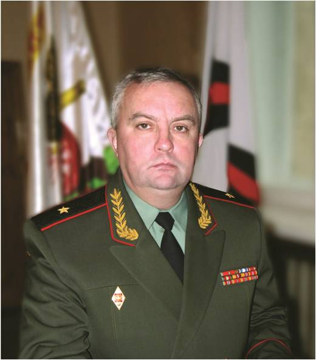

Матвеевский Михаил Михайлович
(01.01.1963)
Родился в крестьянской семье в селе Кобыльск Погосского сельсовета, куда родители переехали из деревни Маншино. В 1978 году окончил Заречную восьмилетнюю школу, затем в 1980 году Кичменгско – Городецкую среднюю.
На выбор профессии Михаила Матвеевского повлиял пример старших родственников. Его дед Степан Прокопьевич, имевший четырех сыновей, принимал участие в трех войнах по защите Отечества. Два его сына также воевали в Великую Отечественную войну. Александр Степанович, младший лейтенант, погиб в 1942 году на Днепре. Второй сын Владимир Степанович, сержант – артиллерист отважно воевал на фронтах и закончил войну в Берлине. Награжден орденом Славы Ш степени и двумя орденами Красной звезды. В то время отцу Михаила Михайловича было 12 лет. Поэтому Михаил Михайлович и выбрал профессию кадрового офицера «родину защищать». В 1980 году поступил в Саратовское высшее военное командно - инженерное училище ракетных войск, ордена Красной Звезды, имени Героя Советского Союза генерал-майора А.И. Лизюкова, которое окончил с отличием. Был направлен для прохождения дальнейшей службы в Ленинградский военный округ. С 1985 года по 1990 проходил службу в 6-й общевойсковой армии этого же округа. Служба проходила в дивизиях: пос. Аллакуртти, пос. Печенга Мурманской области. В августе 1990 года, как имевший положительные успехи в службе, был направлен в Военно - артиллерийскую академию в г. Ленинграде. Окончил ее также с отличием.
После окончания академии продолжил службу в Хабаровском крае в Дальневосточном военном округе. Здесь прошел должности от командира отдельного ракетного дивизиона до первого заместителя начальника ракетных войск и артиллерии Дальневосточного военного округа. В году за добросовестное выполнение служебного долга ему было досрочно присвоено звание «полковник». А с 1 сентября 2004 года М.М. Матвеевский был направлен на учебу в военную Академию Генерального штаба Вооруженных Сил Российской Федерации, которую окончил с отличием. После окончания академии в 2006 году Указом Президента РФ был назначен начальником ракетных войск и артиллерии Регионального командования «Восток» в г. Улан – Удэ. В июле 2009 года Указом Президента Российской Федерации был назначен начальником штаба – первым заместителем начальника ракетных войск и артиллерии Вооруженных Сил РФ в г. Москва, а Указом президента РФ от 4 мая 2011 года полковник М.М. Матвеевский назначен начальником ракетных войск и артиллерии Сухопутных войск Вооруженных Сил Российской Федерации.
Награжден государственными наградами:
- медалью «Жукова» в 1995 году и медалью «300 – лет Российскому флоту» в 1996 году, медалью «Суворова» в 1998 году, а также еще восемью медалями Министерства Обороны. Указом Президента Российской Федерации № 1641 в декабре 2012 года М.М. Матвеевскому было присвоено высшее воинское звание «генерал – майор».
Его родители: отец Михаил Степанович родился в 1929 году в д. Маншино Погосского сельсовета, мать Раиса Николаевна (Колосова) родилась в 1926 году в д. Мичино Верхнеентальского сельсовета. Похоронены на кладбище с. Кобыльск. Михаил Михайлович Матвеевский ежегодно навещает свою малую родину, которая дала ему путевку в большую жизнь.